GitHub is what you'll use to host your site. GitHub is based on Git, which is a version control system (allows you to manage and store revisions to projects). GitHub is part code and design hosting site and part social network.
Let's git started!
A note: I'm using "test1" in my examples, but you should use "yourusername.github.io"
1. In terminal, run the command xcode-select --install.
2. You'll get a pop up that says the command you just ran requires command line developer tools and asks if you want to install the tools now. Hit the blue install button on the bottom right of the popup.
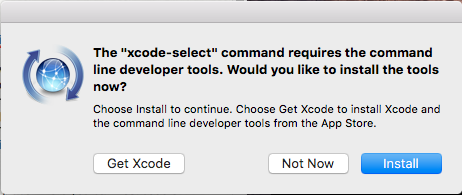3. In terminal, run the command git. If you see a list of git commands, you're good to go.
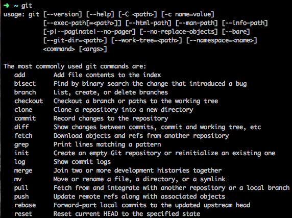Go to GitHub and create a free account.
1. Create a new repository (also called a "repo"). A repo is a folder that contains code, images, design files, etc. on GitHub (much like a directory, or folder, contains those items on our computer).
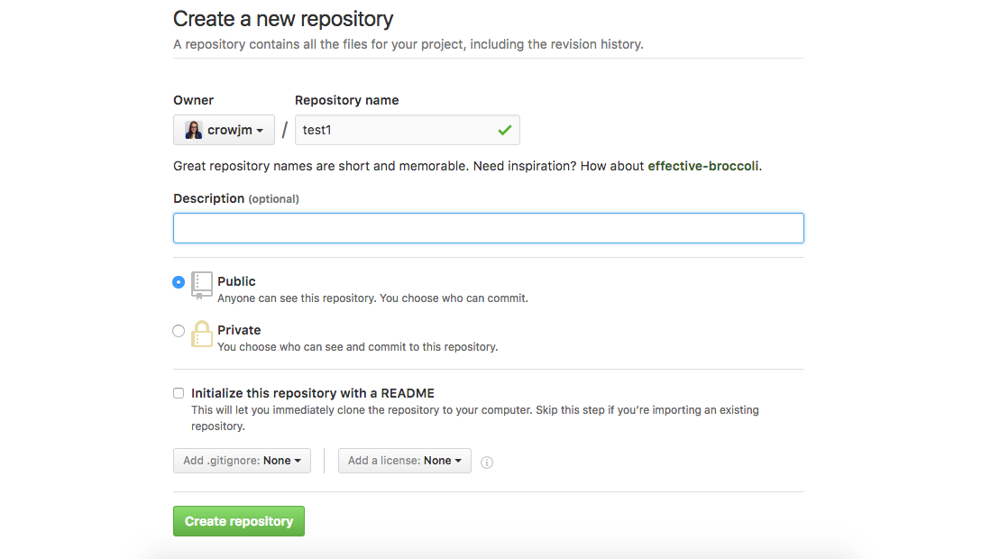2. The GitHub feature for site hosting is called GitHub Pages. To use GitHub Pages, your repo name has to be very specific. Your repo name should be yourgithubusername.github.io.
Find the folder on your computer that contains your portfolio files. Right click on the folder name and change it to yourgithubusername.github.io.
A note: the directory name on your computer and repo name on GitHub don't have to match, but it helps you avoid confusion.
You've created a repo on GitHub and renamed a folder on your desktop, and they're both named yourgithubusername.github.io.
Right now, the repo on GitHub is empty. Just because the repo name and the directory on your computer have the same name doesn't mean that the repo automagically updates whenever you change code in the directory on your computer.
You have to use a little computer magic (aka Git) so that the directory on your computer and the repo on GitHub can talk to each other.
Every time you want to add files from your computer to the repo on GitHub, you have to do so manually.
1. Open your terminal and navigate to the yourusername.github.io folder. You can either drag the folder into terminal and hit enter or use cd to change directories.
2. Run the command git init. This adds Git magic to the yourusername.github.io folder.
Note: you only need to run this command the first time you're setting up a directory to talk to a repo.
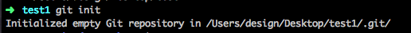3. Run the command git status. This lets you see any files that have changed and also what branch you're working on (more on branches soon).
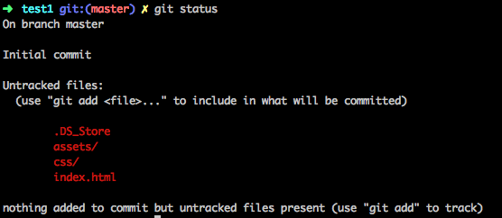4. Run the command git add . (including the . at the end). This adds all the files that you saw in red when you ran git status to the queue to be added to GitHub. If you run git status again, you'll see the files are in green, not red, which means they are ready to add to GitHub.
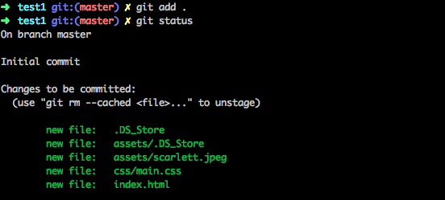5. You now need to add the path to the specific GitHub repo to your directory so that the files know where to go when you send them to GitHub. The command that you need to run looks something like this: git remote add origin https://github.com/crowjm/test1.git. You'll want to use the https link for your specific GitHub repo, though.
Note: this command is only run the first time you set up a folder to send files to GitHub.
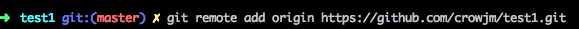6. Next up, you need to write a little message deatiling what files you added and/or what changes you made. You'll do this using git commit -m "message". For the first commit, "init commit" is common practice, but you'll want to be more specific after that.
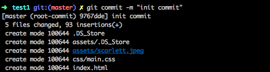You've got your files added to the queue to send to GitHub along with a message about them, and you've also added the Git magic to your folder, and told your files the specific location you want them to go on GitHub.
7. The last thing to do is push your files from your computer to GitHub! We do this using git push origin branchname. In this case, the branchname is master, so you'll run git push origin master.
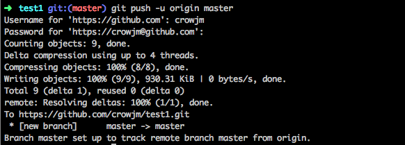Now if you refresh the repo page on GitHub.com, you'll see your files there!
The GitHub Pages feature works with a branch called gh-pages. So far you only have one branch and it's called master. You need to make the gh-pages branch and add your files there.
What is branching anyway? Branching is a way for you to have multiple versions of your project in the folder. Whenever you create a new branch, all of the code from the branch you are on when you create a new branch is copied to that branch. For example, when we create our gh-pages branch from master, all of the code from master will be on gh-pages.
However, changes that you make on the gh-pages branch will not show up on master unless you expicitly add them (more on this later). Branching is great because it allows you to experiment with new designs, features, etc. in a safe zone without changing all the files.
To create a new branch, run the command git checkout -b branchname. In this case, we want to create the branch gh-pages, so rungit checkout -b gh-pages.
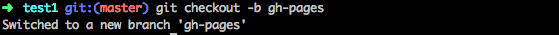Note: the -b in the command we just ran is what creates the new branch. To switch between branches, just run git checkout branchname where branchname is the branch you want to switch to. Make sure all of your changes are committed before switching branches.
Now you're on the gh-pages branch. However, if you go to GitHub.com, we don't see the gh-pages branch there. That's because it currently only exists on our computer. Files ONLY go to GitHub when we tell them to.
To add your files from the gh-pages branch to GitHub, run the command git push origin gh-pages.
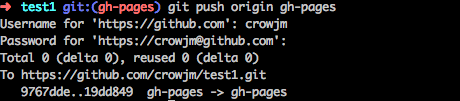Now if you go to GitHub, you see your gh-pages branch with all of the content there, yay! You can also go to yourusername.github.io and your site will be live. Double yay!
Say you want to make a change to your nav. What would that workflow look like?
1. First checkout to a new branch. Call it nav-change git checkout -b nav-change.
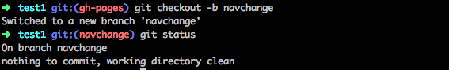2. Make your changes. Run git status to see the files that were changed.
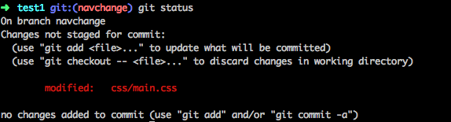3. Add your changes to the queue to be added to GitHub using git add ..
4. Write a commit message explaining what changes you made. git commit -m "change nav bg color to blue".
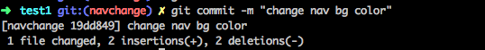5. Lastly, push your changes up to GitHub, git push origin nav-change.
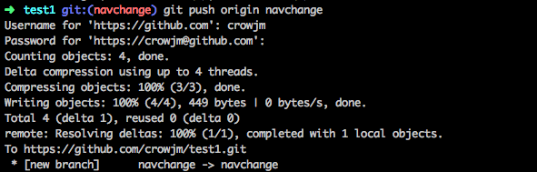The changes you made to the nav bar look great and you want them to show up on your site. How do you take that code and apply it to the gh-pages branch?
1. Switch to the branch you want the code to be applied to. In this case, you want the changes to appear on your deployed site, so you need the changes to be applied to the gh-pages branch. To switch to this branch, run git checkout gh-pages.
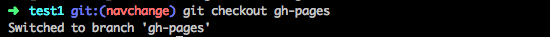2. Next, you'll need to pull in the code from the branch that you made the changes on. Run git pull origin nav-change.
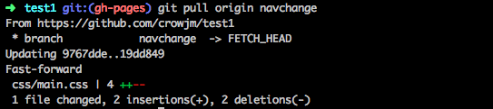3. Then you need to push the changes up to the gh-pages branch on GitHub. git push origin gh-pages.
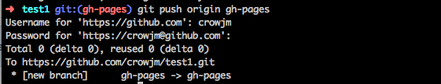Now if you go to username.github.io, you can see the changes that you made on the nav-change branch that you pulled into the gh-pages branch are there! The changes still exist on the nav-change branch, we are just also using them on the gh-pages branch now too!